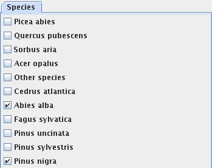

Qualitative property filter |
Capsis Help |
Select some individuals by choosing some values for their
qualitative variables.

Ex: selection of the values "Abies alba" OR "Pinus nigra" for the Species qualitative variable.
If the individual contains more than one qualitative variable, it is
possible to parametrize several at the same time.
Ex : (Species = "Abies alba" OR "Pinus nigra") AND (Status = "Dominant" OR "Co-dominant")